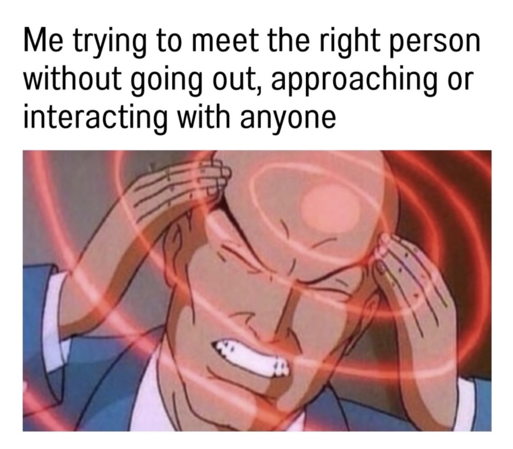

Preatty obvious honestly and a little cringe that you even ask. So thanks to Einstins amazing mathmatikool equation, "E=mc2" we can calculate that because the land that is currently known as "Virginia" was indeed named so in honour of the late queen of England, Queen Elizabeth the 1nd, and because she ended died a "Virigin" that makes her count "0". So therefor E=mc2 + 0 = virgin.
lol loser.

Firstly this is an's excellent questions, now becasue of the triganomtry affect in relation to the sun, the solar Beamah rays exacerbate the legitness of said mirrors. Thusly dissproving the notion of said eyes upon the mirrors.
Well, there are several reasons a copmuter might be running slow. Firstly it is possible your computer has a small amout of RAM installed, contrary to popular beliefs you can install more RAM for free online just a click away instead of installing more sticks manually.
It is also possible youvest havents bean exersing your computer, now obviously computer dont have legs, but you can run with your tower or laptops outside by caring it with you. This will increasing your copmuters indurance and performaces.
Other times you may need to shock your copmuter to give it a little boost, almost like drinking cofefe for us humans. IF you are in a carpetted area grab some socks and start draging yours feeets across the floor. Thens when your already and charges up simply touch the insides of your computer to give it a little zap.
Yuors copmuter should be now W I D E awake.
Youvst alread lost the gaem.